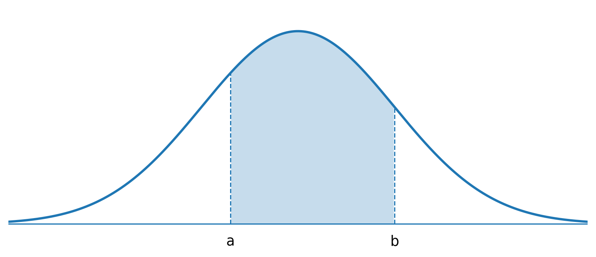
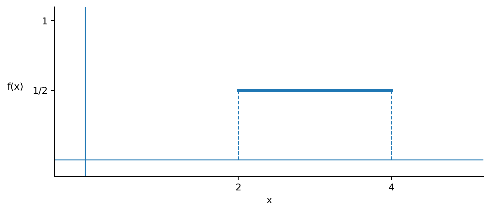

Example
Prove that for a continuous probability distribution, the conceptual formula of variance, ∫(x − μ)² · f(x), is equal to the computational formula, ∫ x² · f(x) − μ². (Show Algebraic Steps)
Introduction to Continuous Probability Distributions
We will start with basic integration since we will be utilizing it in this section. This is a mathematical technique taught in calculus which allows us to calculate the area under a curve. We denote the integral of f(x) as ∫ f(x). If you have not dealt with integration before or if you do not remember how it works, below is a guide for what you need to know for this section of material.
You can pull a constant outside of an integral just like a sum, ∑ c · x = c ∑ x.
You can integrate each part in the same way as you can sum each part, ∑(x + c) = ∑ x + ∑ c
The integral of a constant is the constant times x. This is because we can rewrite ∫ c as ∫ c · x⁰ since x⁰ is always 1. Next we pull out the constant and use the pattern, ∫ c · x⁰ = c ∫ x⁰ = c · x¹/1 = c · x.
The integral of x just uses the pattern. The exponent on x is 1. Therefore, adding 1 gives an exponent of 2 and we divide by this new exponent. Some prefer to write the constant as a fraction rather than as a denominator. It is mathematically equivalent so you can do it either way.
Using the pattern we add 1 to the exponent which gives a new exponent of 3 and then divide by the new exponent.
Again, using the pattern we add 1 to the exponent which gives a new exponent of 4 and then divide by the new exponent.
In statistics, if there are no limits on a density function it means the integral is over the domain of the function. When limits are included, it is necessary to integrate over that interval. To do this, we first take the integral as previously discussed and include a vertical line to identify the interval. Then you plug in the upper limit of the interval into the integral and subtract what you get when you plug in the lower limit of the interval. A couple examples are included below.
With an understanding of discrete probability distributions, we are now ready to tackle continuous random variables. The idea of a probability distribution here does not change. We need to identify P(x) for all possible x values. Of course, the difference in the continuous case is that we have an infinite number of outcomes so we cannot simply list them out as typically done in the discrete case. In mathematics we use functions to represent an infinite number of outcomes on a continuous scale and we will utilize that concept for continuous probability distributions.
For continuous random variables we assign probability to intervals. (Not Points)
is the area under the curve between a and b (example curve displayed below)

The probability for each point in a continuous probability distribution is theoretically zero. There are multiple ways to think about this idea. Suppose in the above graph, you calculate P(x = a). You could just think about it as a rectangle. A single point has width 0, so no matter the height, the area is 0. You can also think about it as an integral as introduced earlier. Here though, with a single point you would integrate from a to a which would yield
(if you plug a into the integral and then subtract what you get when you plug in a again, you will get 0). Finally, think about the ideas presented in basic probability. We know the basic idea is to take the number of outcomes that satisfy the event over the total number of outcomes. In a continuous case there is an infinite number of outcomes so the denominator goes to infinity,
However you prefer to think about it, the theoretical probability of a single point in a continuous distribution is 0.
Thus for continuous variables
since P(x = a) = 0 and P(x = b) = 0. The equality (in ≤) does not matter since it has a probability of 0.
The calculation of the mean, variance, and standard deviation for a continuous probability distribution works the same way as it does for the discrete probability distribution. Mathematically, the difference is that instead of a sum we will now use integration and the probability will be represented by the density function. If you compare formulas for the discrete case to the continuous case the only difference is instead of Σ there is ʃ and instead of P(x) there is f(x). If you would like to compare, the mean, variance, and standard deviation formulas for a discrete probability distribution are: μ = ∑ x · P(x), σ² = ∑(x − μ)² · P(x) = ∑ x² · P(x) − μ², and σ = √σ², respectively.
Population Mean
Population Variance
Population Standard Deviation
Prove that for a continuous probability distribution, the conceptual formula of variance, ∫(x − μ)² · f(x), is equal to the computational formula, ∫ x² · f(x) − μ². (Show Algebraic Steps)
What happens if we take the squared off the variance? Simplify ∫(x − μ) · f(x).
Using the density function, f(x) = 2x for 0 ≤ x ≤ 1, do the following.
a. Show the total probability (area) is 1 using integration.
b. Find P(0.5 ≤ x ≤ 1).
c. Find μ.
d. Find σ².
e. Find σ.
a.
b.
c.
d. First:
Second:
e.
There are many types of continuous probability distributions. We will discuss several in this class. The uniform distribution is common and will allow us to discuss the mathematics of a continuous random variable. As seen previously in class, a uniform distribution is flat. Therefore, the equation is just a horizontal line which is relatively easy to deal with mathematically.
The density function for the uniform distribution is
The parameters of the uniform distribution are a and b. These are constants that define which uniform distribution we are dealing with. As you can see, the density function is just a constant function (graphically a horizontal line). Remember that x is the random variable and f(x) is used to represent the probability.
Suppose we are interested in a uniform distribution with parameters a = 2 and b = 4. Do the following.
a. Identify the density function.
b. Draw a picture of the density function.
c. Show that the total area under the density function is 1 using integration.
d. Find P(2 ≤ x ≤ 3).
e. Find the mean, μ.
f. Find the variance, σ².
g. Find the standard deviation, σ.
a.
(Make sure when you identify a uniform density function that you limit the domain. If you do not limit the domain then it is not a density function because the total are will not be 1.)
b.

(The density function is just a horizontal line through ½ but the domain is limited between 2 and 4 so only that part of the line creates the density function.)
c.
(With the uniform it is easy to see that the area is 1 since it is a rectangle. In this case, the rectangle is ½ by 2 so the area is 1. Of course this is not the case for other continuous distributions. You can also see how the density function of the uniform works. Basically, you limit the domain so the product of the width and height is 1.)
d.
(Looking at the picture here you can see that this is ½ the rectangle. You can also calculate this by taking ½ by 1 since the area of interest is also a rectangle.)
e.
(Once again, looking at the picture we can see that a mean of 3 is correct. The uniform distribution is symmetric and the point of symmetry here is 3.)
f. First:
Second:
g.
Like you have seen before with the binomial distribution, when specified properties are satisfied it is often possible to come up with shortcut formulas. For the uniform, we can identify shortcuts for probability, the mean, and the variance. With these shortcuts, we do not have to complete the integrals every time we do a problem. In application, this is a time saver. To derive shortcut formulas, we use the information we know. For example, to derive a shortcut for the mean of a uniform, you simply use the probability distribution formula for the uniform and plug it into the mean formula for continuous probability distributions. The derivations follow.
Since a and b are the parameters of the uniform, we will use c and d in the probability statement. Of course, c and d must be within the domain of the function.
Population Mean
Population Variance
As you should be accustomed to, the standard deviation is the square root of the variance.
The uniform distribution is symmetric so the mean and median are equal.
The uniform distribution is flat (there is no peak) so the mode does not exist.
The low and high for the uniform are simply the parameters a and b, respectively.
Travel time from Lexington KY to Columbus OH is a uniform distributed between 200 and 240 minutes. For this distribution, do the following.
a. Identify the density function.
b. Find the probability of arriving in less than 225 minutes.
c. Find the mean, μ.
d. Find the median.
e. Find the mode.
f. Find the range.
g. Find the variance, σ².
h. Find the standard deviation, σ.
a.
b.
c.
d. Median = 220
e. Mode = D. N. E.
f.
g.
h.